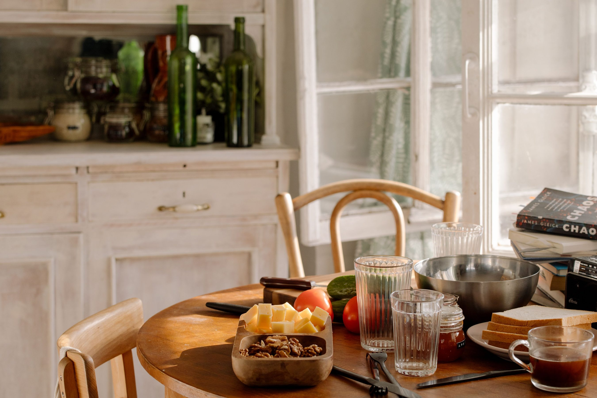
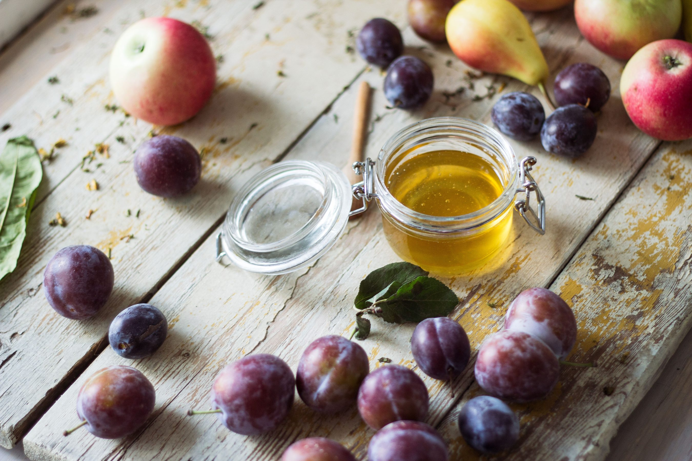
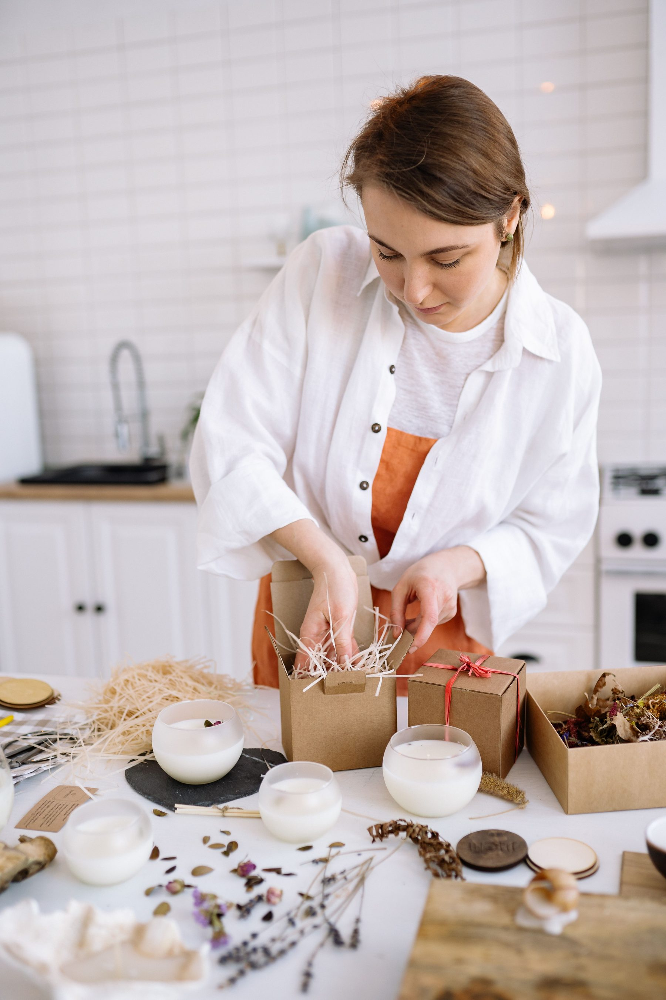
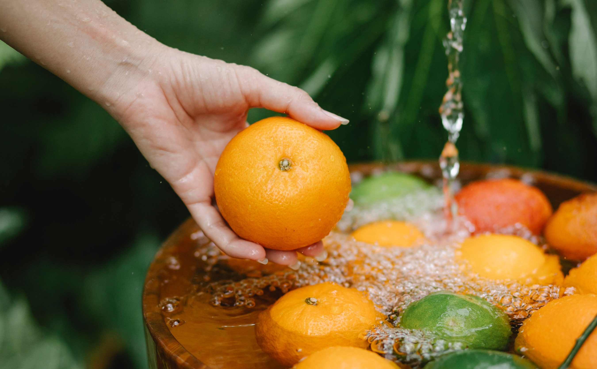

Fruit first
Flavour guides the recipe. We choose ingredients that support the fruit, rather than hide it.
Meet Orchard & Jar
A love of good fruit. A well-worn recipe book. A little patience.


Our story
Orchard & Jar began with a familiar idea: preserve the best of a season to enjoy a little later. A family kitchen became a neighbourhood pantry, one thoughtfully made jar at a time.
Our storyOur mission
We believe a good preserve should taste like the fruit it came from. Our approach keeps recipes simple, batches small and the moments around your table at the heart of everything.
What matters to us
Flavour guides the recipe. We choose ingredients that support the fruit, rather than hide it.
A community pantry begins with makers, growers and customers who care.
Reusable jars and simple gift packaging keep the focus on what is inside.
From local fruit to handmade preserve
We choose fruit for ripeness, aroma and flavour, working with nearby growers.
Fruit, sugar and lemon are slowly simmered so each flavour has room to shine.
Each jar is sealed, labelled and made ready for your pantry or gift box.
The hands behind the jars
The hands, recipes and care behind each little jar.
Founder & recipe maker
Keeps the kitchen notebook and believes the best recipes leave room for the season.
Sourcing & production
Works on thoughtful ingredient sourcing and the practical rhythm of preserving days.

Gifting & community
Brings together flavours, packaging and the little details that make a gift personal.
A little history
A summer strawberry harvest becomes a few jars for friends and family.
A small seasonal collection takes shape, with fruit at the centre.
Pantry hampers bring together favourite jars and personal notes.
New seasonal recipes find their place on the shelf and at your table.

A commitment to the source
We plan our recipes around the growing season. Ask us about fruit origins, the current harvest and the care behind each batch.
Talk to our kitchenGood fruit. Good company.
Find a flavour for your own kitchen rituals.